Tolérances ISO, filetages, matériaux et calculs - tout dans une seule application. Rapide. Hors ligne. Pratique. Développée par un polymécanicien pour des experts comme vous.
 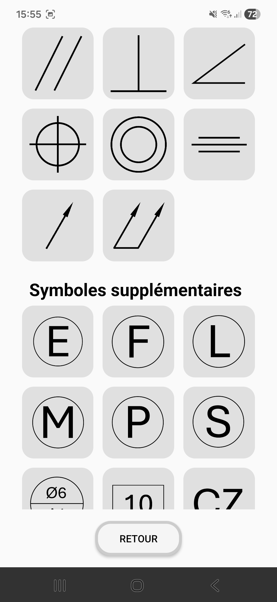
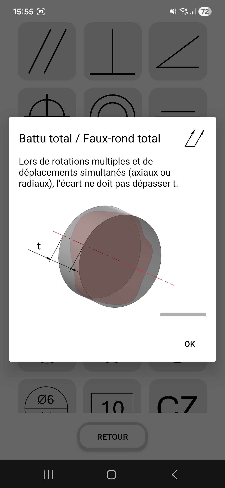
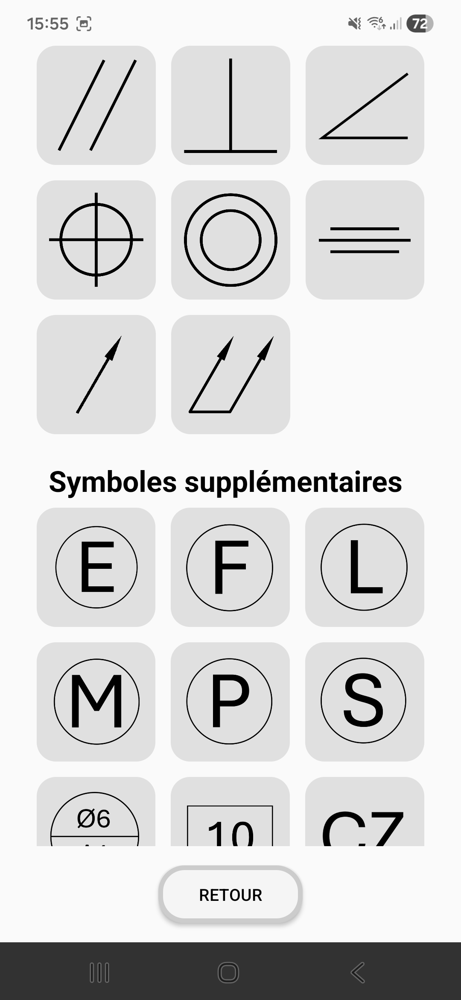
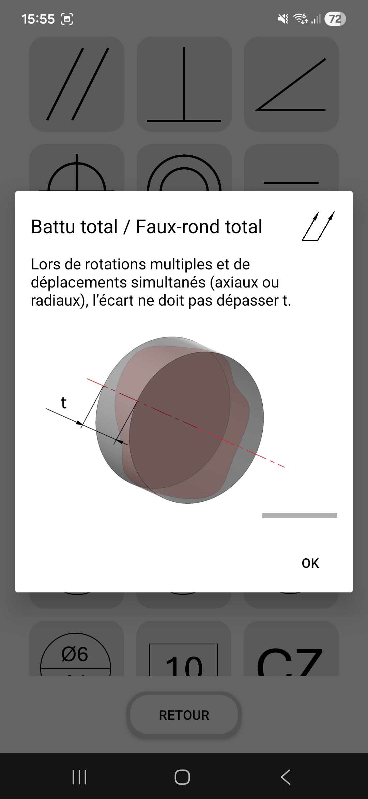
 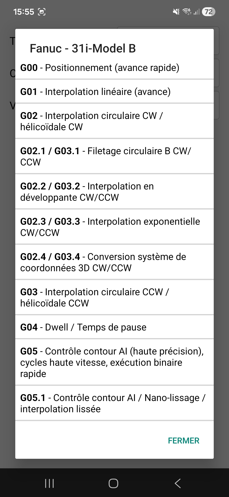
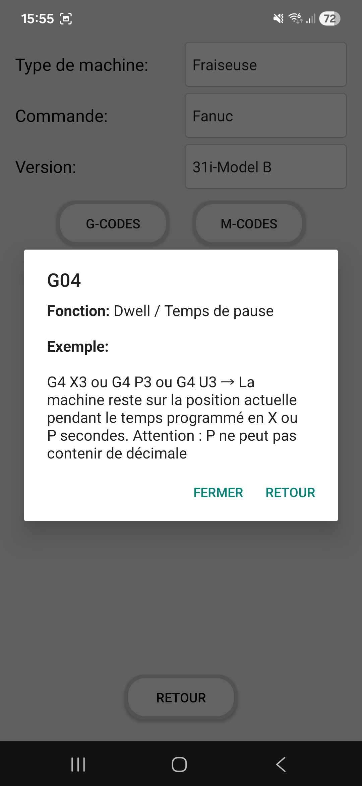
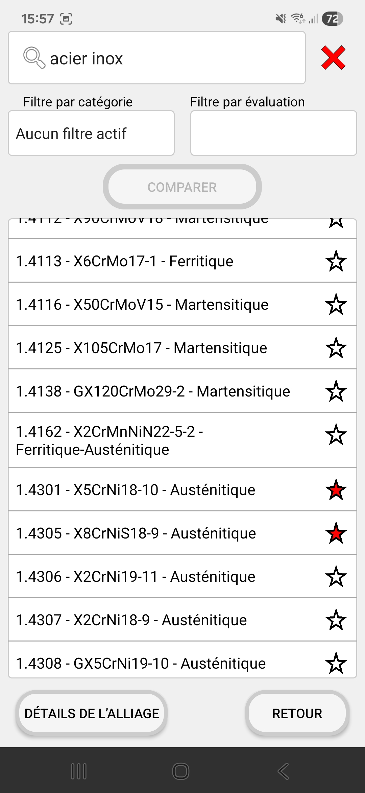
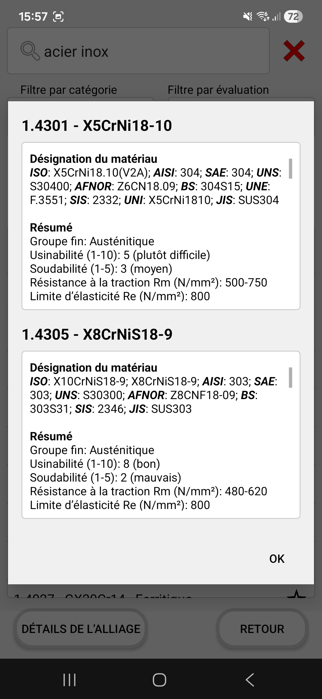
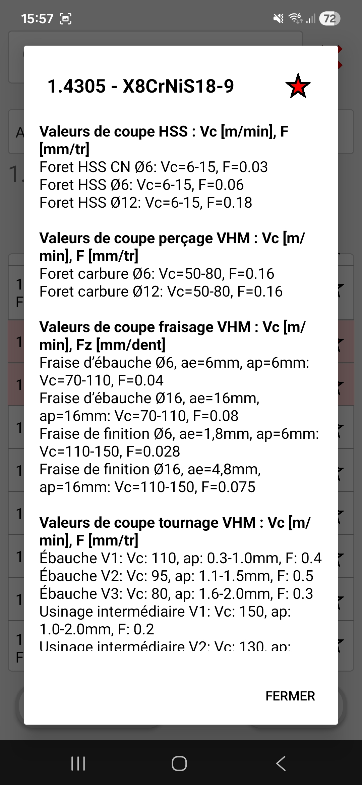
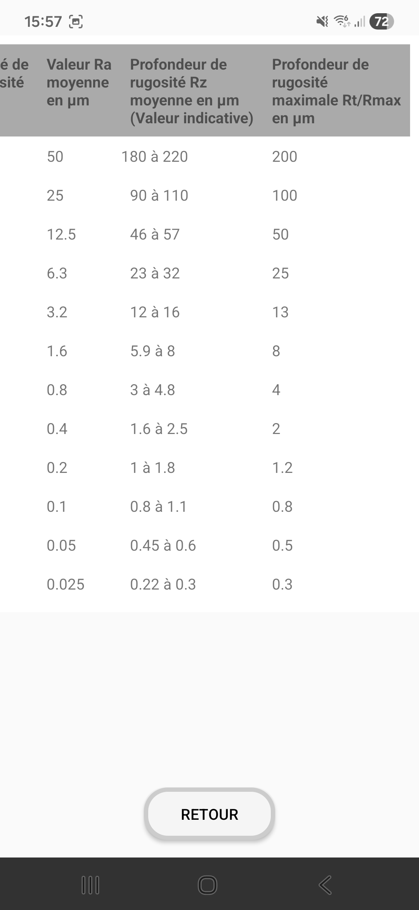
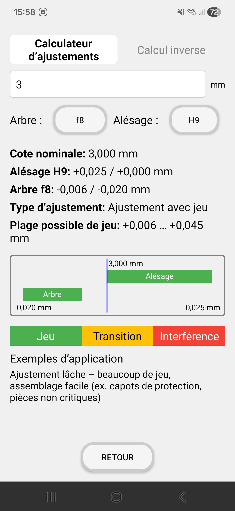
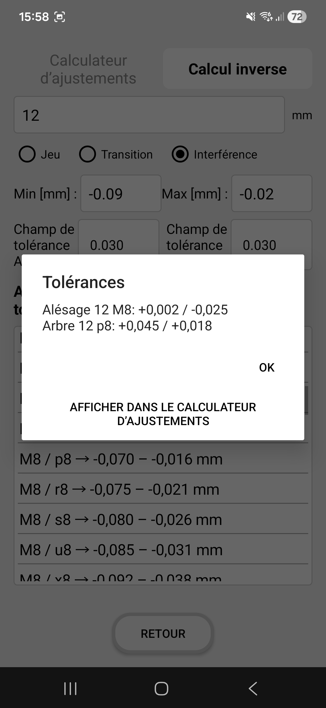
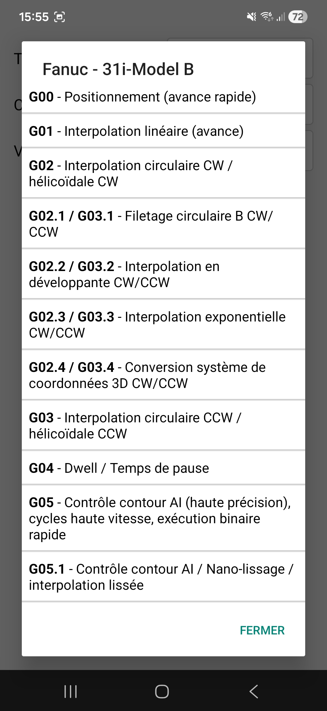
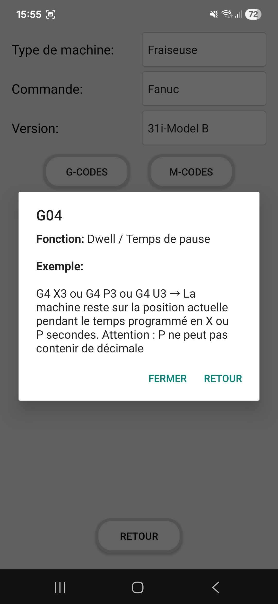
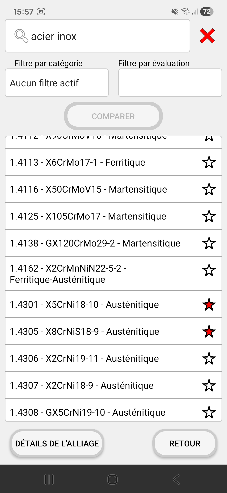
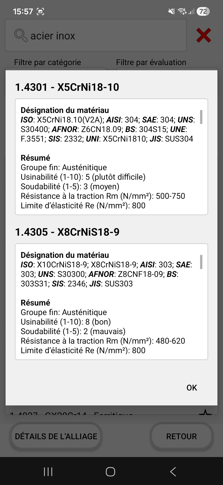
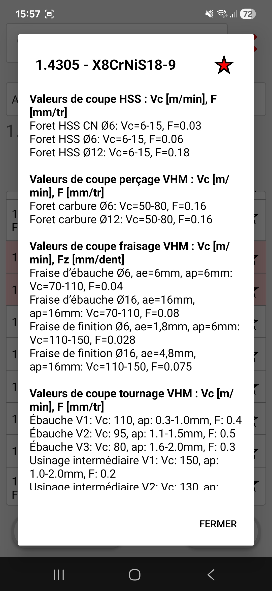
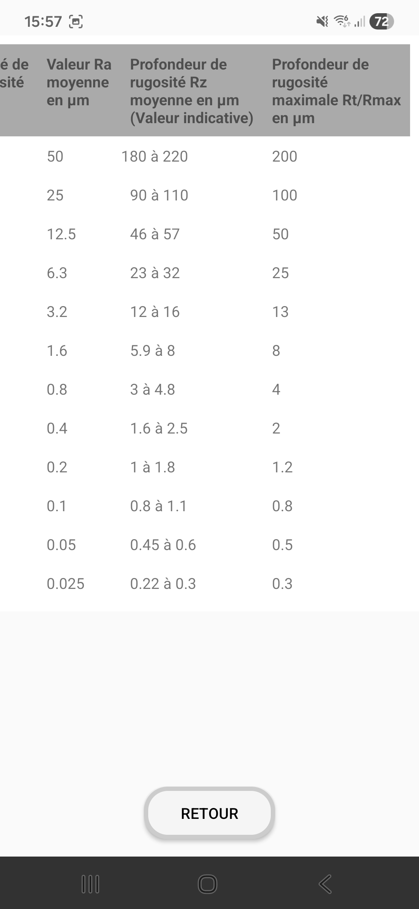
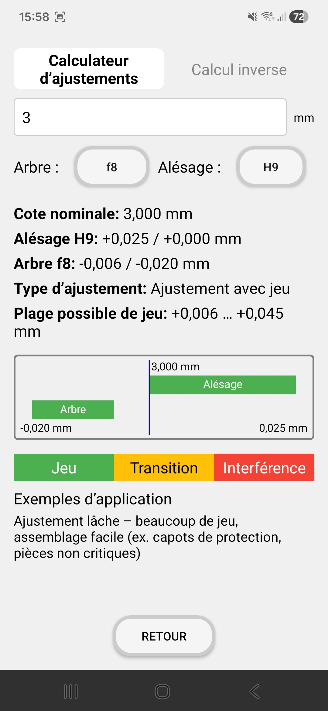
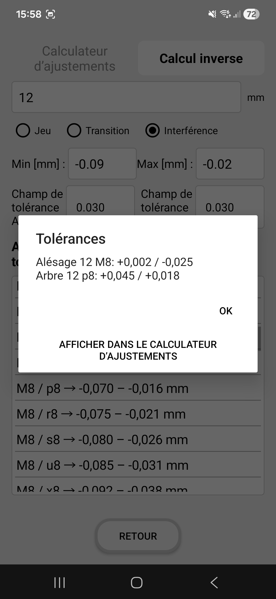
PolymApp est l'application tout-en-un pour les spécialistes CNC - développée à partir de l'expérience terrain d'un polymécanicien qualifié.
Dans la production moderne, le temps est le facteur décisif. PolymApp a été créée pour combler le fossé numérique entre le manuel technique classique et la machine CNC à haute efficacité. Elle regroupe toutes les références techniques et calculateurs essentiels en une seule application : tolérances ISO, dimensions de filetage, gorges de dégagement, données sur les matériaux, états de surface et bien plus encore - toujours à portée de main, même sans connexion Internet, directement dans l'atelier.
1. Reconnaissance intelligente de texte sur dessins techniques : Fini la saisie manuelle fastidieuse des tolérances. Photographiez simplement la cote sur votre dessin technique (ex. 30 H7), et PolymApp vous fournit instantanément les dimensions limites. Cela vous fait gagner un temps précieux et élimine les erreurs de transcription.
2. Calculateur de pré-tolérance intelligent : Vos pièces sont-elles traitées après l'usinage ? PolymApp calcule automatiquement les pré-tolérances nécessaires en tenant compte des épaisseurs de revêtement (ex. zingage ou anodisation), afin que la dimension finale vous convienne parfaitement.
3. Encyclopédie complète des matériaux : Avec un accès à plus de 400 matériaux, vous trouverez non seulement les propriétés mécaniques, mais aussi des conseils précieux sur l'usinabilité et des recommandations de données de coupe. Comparez les normes internationales de matériaux en quelques secondes.
4. Priorité au mode hors ligne pour l'atelier : Nous savons que la réception est souvent limitée dans les halls de production. C'est pourquoi toutes les fonctions de base de PolymApp sont disponibles hors ligne. Vos données sont exactement là où vous en avez besoin - directement à la broche de la machine.
5. Par des pros, pour des pros : PolymApp n'est pas un projet informatique théorique ; c'est un outil optimisé précisément pour les exigences quotidiennes d'un polymécanicien - sans superflu, intuitif et extrêmement rapide.

Quels types de filetages sont pris en charge ?
L'application couvre une gamme extrêmement large et fournit toutes les dimensions pertinentes pour :
• Filetages métriques : Pas standard (M), pas fin (MF) et Helicoil (métrique & fin).
• Filetages pouces & US : UNC, UNF, UNEF, UNJC, UNJF et les séries UN-6 à UN-32.
• Normes britanniques & gaz : G (Gaz/Pas du gaz), BSW, BSF et BA.
• Filetages spéciaux : Trapézoïdal, ACME, Stub ACME, ainsi que NPT et NPTF.
Vous trouverez instantanément les dimensions correctes pour presque toutes les exigences.
PolymApp prend-elle en charge les revêtements spéciaux ?
Oui, le calculateur de pré-tolérance intégré vous permet de saisir des épaisseurs de revêtement spécifiques. En un clic, vous obtenez les dimensions de fabrication exactes à respecter avant le traitement de surface (ex. anodisation ou zingage) pour garantir un ajustement final parfait.
PolymApp peut-elle aider pour les tâches d'assurance qualité (AQ) ?
Absolument. En consultant rapidement les dimensions limites et les finitions de surface directement au poste de contrôle, les comparaisons théorique-réel peuvent être effectuées beaucoup plus efficacement. Le calculateur d'ajustements et les spécifications de rugosité aident à résoudre instantanément les ambiguïtés lors de l'examen des plans.
PolymApp est-elle adaptée aux apprentis, aux autres métiers ou aux bricoleurs ?
Tout à fait ! PolymApp est un excellent outil d'apprentissage pour les apprentis polymécaniciens afin de comprendre la logique des tolérances ISO. De plus, les concepteurs, les préparateurs (AVOR) et les bricoleurs ambitieux ou "makers" bénéficient de données professionnelles pour réaliser leurs projets avec une précision industrielle.